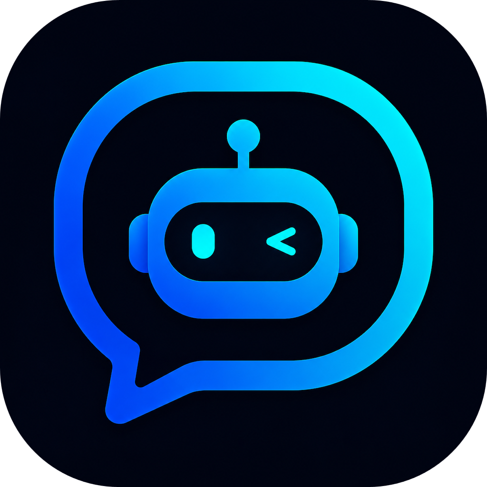

A native Apple client for LiteLLM, Ollama, and any OpenAI-compatible server. Connect to any LLM provider with a beautiful SwiftUI experience. Run local models or use privacy-respecting APIs — your data, your server, your rules.
Chat with any LLM using Server-Sent Events for instant, token-by-token responses.
Built with Apple's Liquid Glass design language for a native, modern feel.
Connect directly to Ollama, LiteLLM, or any OpenAI-compatible server — Anthropic, Groq, Gemini, and more.
Native experience on iPhone, iPad, and Mac from a single shared codebase.
Self-hosted — your data stays on your server. API keys stored securely in Keychain.
Generate images from text prompts via DALL·E, Stable Diffusion, Gemini, and more.
Speech-to-text dictation and text-to-speech playback for hands-free interaction.
Available in English, Spanish, French, German, Italian, Portuguese, Japanese, and more.
Xcode 26+ · iOS 26+ / macOS 26+
OpenClient LLM is open source. Browse the code, report issues, or contribute on GitHub.